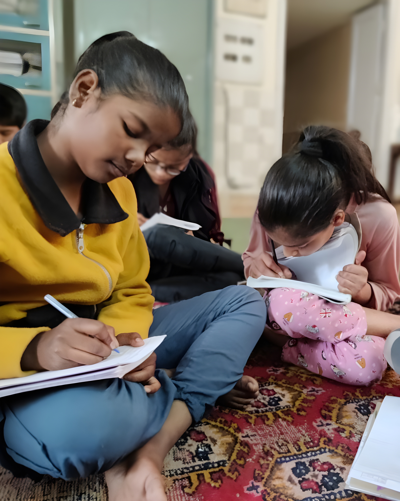

Welcome to
ACCESS DENIED
DISCLAIMER
The stories presented in this work are inspired by true events and experiences. However, to protect the privacy and anonymity of the individuals involved, names, characters, and specific plot details have been altered. These stories have been artistically curated to illuminate various aspects of the challenges faced by underprivileged students in the realm of education. While the narratives draw from real-life situations, they do not represent an exhaustive or universally applicable account. Each student's journey is unique, and the hardships depicted here may or may not mirror the experiences of all individuals. The stories featured are a result of ethnographic research and interviews conducted in India, capturing the essence of real struggles encountered by specific households while shedding light on broader issues within the context of education.
You are among a poor Churiwal farming family. Your father is a violent drunk, mother is a house helper, unable to provide for the family. Your grandfather is too weak to tend to the fields.
This leaves you along with your siblings to take care of household responsibilities and work menial jobs to earn a daily living, while attending school.
I am 14 years old.
More of a mother than a sister to my siblings.
I sell balloons to earn a living for my family.
Mumma’s meages income is taken by Dad for his alcohol.
So, if I don’t work, we go to bed hungry.
But Shashi, my neighbour,
goes to school with a sturdy green bag with shiny buckles.
I could also go if I wanted to. School is free.
I yearn for it.
Oh, I can't understand much - I have missed so many classes! And with all the household work, there was no time to revise or do homework. Plus, this grumbling stomach of mine is not helping at all. Oh my, my family must be hungry too...
Yay! The bell finally rang. But, I stand in an empty room. Where is the meal?
“The food yesterday was so bad,” a girl whispers behind me.
“Let it at least come,” the boy next to her replies.
“I will take some home.” another girl mumbles.
“Only if it is fit to be eaten, you silly Geeta!”
My heart starts to sink.
Excitement bubbles up within me as I see the food arrive.
But eww, what food is this?
“I can’t take this home!” quietly exclaims Geeta. The other children too hold their plates, some staring, some scoffing at the worm infested food.
Geeta throws the food away, while the person next to her picks out the insects and eats. I even see some pack food for their family in torn polythene bags.
The Midday Meal Scheme aims to serve free lunches to 1.12 million government schools. Over 118 million children depend on the midday meal for their daily sustenance. Yet there are instances when the food does not reach the schools or is unfit for consumption, eroding the policy's credibility. [Source]
Ugh, where is everyone going? School is not over yet.
“Arrey! The school is practically over only, Didi. You also go home,” a boy sitting next to me replies.
Wa…wait…what? Why? Where is ma’am? Is she not coming to teach?
“Oh, teachers don’t teach after the midday meal.
They have to clean up all the mess that is created before they return to class.
And that will take all afternoon.”
Tears roll down my eyes.
I am still hungry.
I got no money.
Dad will hit me.
I learnt nothing.
The midday meal scheme, launched to foster education is paradoxically hindering the very learning it intended to support. The absence of resources and personnel to facilitate this nation-wide initiative just further adds burden on the role of a teacher, taking away from what they are actually supposed to do - teach.
What can I do?
- Learn more: What is the Midday Meal Scheme?
- Sponsor a scholarship:
- Apply for a scholarship:
- Be a part of organizations working in this field:
- Get Informed:
-
Contribute by sharing your own story or experience:
Email us at admin@access-denied.in
I knocked on the windows of fancy cars that were lined up at the traffic signal.
Many shoo-ed me away. Only a few rolled down their windows.
I managed to sell some balloons, and started counting the money in my palms.
“15, 20, 25... what comes after twenty-five?” God only knows.
What I know is that twenty-five means father will be satisfied and my brothers will eat.
That is all I care about.
Although the government provides free education to the underprivileged,
families lose wages when children stop working in order to attend school.
This further exacerbates the issue of low enrolment rates in schools.
The Child Labour (Prohibition and Regulation) Act, 1986, only bans children under 14 years from working in hazardous occupations. This law is unable to prevent the ‘hidden child labour’ disguised as helping family members for additional income. This limitation leads to undue exploitation of children for circumstances beyond their control. [Source]
What can I do?
- Sponsor a scholarship:
- Apply for a scholarship:
- Be a part of organizations working in this field:
- Get Informed:
-
Contribute by sharing your own story or experience:
Email us at admin@access-denied.in
I am Surya. I am known to have a quick temper, much like my father. I like to hang out with my rowdy gang of friends. Earning a quick buck in street gambling thrills me. I know I am clever and street-smart. Mishra Sir, my teacher, even says that I should learn and use my brains elsewhere, but why would I want to sit inside those boring school walls and waste my life?
But I also sometimes dream of sitting inside the government officer Babu’s office all day and ordering people around. What power that is. But for that, I will have to go to school.
I stared at the high ceiling. It's been an hour. The teacher is still not teaching.
My classmates are running around, laughing, playing, fighting, making so much noise.
Hesitantly, “Ma’am, we won't study today?”
“How can I teach in such chaos?” Mrs. Sharma screeched at me.
Learning requires discipline and I cannot enforce it here.
“Just yesterday Mishra Sir was stabbed by a boy in class 11. He asked for the boy’s homework. The boy had not done it and felt ashamed. So…
He’s still in the hospital.”
NEWS CHECK
“Aug 14, 2023, Mumbai:” A 17-year-old student in Mumbai STABBED his teacher during an argument over his studies. [Source]
“Jan 20, 2023, Delhi:” Upon being reprimanded by their physical education teacher for not wearing the correct uniform, 3 students STAB their teacher in a government school in Delhi. [Source]
“Sep 18, 2019, Mumbai:” A 13-yr old boy stabs school teacher to DEATH in Mumbai based on varying reasons, still unclear. [Source]
As I was walking home after school, Ajit mocked me “You want to be Babu?” shoving me aside. I too pushed back and a fistfight started.
Today is the 11th day when I am in bed with bruises from the blows he gave me that day for ditching him to go to school.
So, I went to school for power,
but how powerful am I now?
I liked Mrs. Sharma.
But what did that get me?
Numerous underprivileged children in India are at risk of straying down a troubling path due to lack of guidance from teachers and parents. Paradoxically, school, designed to instill discipline, sometimes fails to do so, disrupting their education and exposing them to detrimental influences, eventually leading to their departure from school.
What can I do?
- Sponsor a scholarship:
- Apply for a scholarship:
- Be a part of organizations working in this field:
- Get Informed:
-
Contribute by sharing your own story or experience:
Email us at admin@access-denied.in
My friends and I steal some money out of Timaar chacha’s cash box. He sees us and comes running out of the warehouse. “You have taken away my monthly earnings, you rascals! Give it back.”
I giggled running, “No Timaar chacha, 20 customers daily into 300 rupees per person... your monthly earning is close to 1,80,000. We only took 80,000 today. We’ll come back for more.”
“You think you are so smart? Why don’t you go to school to learn then?” he shouted back.
But as I was running away the village police officer grabbed me. In terror, I used my knife to slice his hand. But he was too quick. He twisted my arm.
I now see the inside of a closed dark cell.
Maybe I could have used my brains somewhere else.
Lack of proper guidance from parents and teachers amidst poverty has led innocent children like Surya to resort to a life of crime. Control over their life is a powerful incentive that lures these young lives into a sordid world from which there is no return.
What can I do?
- Sponsor a scholarship:
- Apply for a scholarship:
- Be a part of organizations working in this field:
- Get Informed:
-
Contribute by sharing your own story or experience:
Email us at admin@access-denied.in
I remember sitting beside my grandfather on the fields listening to his farming stories. Oh, what fun it was! But he is sick now and it is the harvest season. I want to help him. Good yield means happy Daadu. But he also says that school will teach me the future of farming. I want to become a big farmer one day.
Oh no, why is there no teacher here?
I look around me. The classroom isn’t in order. Many students are out playing in the ground, some are idly waiting, some are studying.
Just as I opened my book to study, Jeetu Bhaiya barged in panting. “You know the student Kora? His father…” Jeetu leaned closer, “...committed suicide. He couldn't pay off his loan.”
Farmer suicide is a national crisis in India. [Source]
One agricultural labourer DIED by suicide every two hours in 2021
due to their inability to repay loans. [Source]
In addition to the constant financial pressure, children of farming families are adversely impacted psychologically. The mental and emotional stress make it more difficult to focus in class.
Oh no, my Daadu is also a farmer. Does he also have loans?
His image flashed before my eyes.
“Is the teacher not coming again?” I ask Jeetu.
“Oh, she had to go for election duty. She will come after a few weeks.”
“What? They are on leave again? They just went for some other duty a month back!”
I was disheartened.
Government school teachers are also government employees. As a result, they have to undertake additional responsibilities including election duty, census collection, various administrative tasks and trainings. This leads to their absenteeism from school for 2 - 2.5 months, hampering their ability to teach, eventually causing student dropouts.
“Will she bring storybooks?”
Jeetu shrugged. “Most days, she just sits and does admin work. She doesn't teach much… You can read that book there on the shelf.”
“Ah, that has pages missing.”
“At least we have that much.”
I opened a book and started studying.
“This is not making any sense to me, Jeetu. Can you explain?”
“Oh this, we learnt it last year. How do you not know?”
“They never taught us.”
“How did you pass your exam then? This was a major chunk on it.”
“What do you mean? They never fail us. Even if we write nothing on the exam…
I don’t need to learn to pass.”
There are very few resources directed towards education in India, whether in terms of materials such as books, classrooms, infrastructure, facilities, opportunities, or the time provided by teachers to teach. Until there is a change in the allocation of resources and efforts towards education, students will continue to suffer in their pursuit of learning.
What can I do?
- Learn more: Farmer Suicide in India
- Sponsor a scholarship:
- Apply for a scholarship:
- Be a part of organizations working in this field:
- Get Informed:
-
Contribute by sharing your own story or experience:
Email us at admin@access-denied.in
I ran towards the field. “Let me help you, Daadu,” panting.
I plucked, rolled, cut, and gathered till dusk.
“Will we get enough money now?”
He did not respond, but his eyes betrayed him - maybe not enough.
I committed to helping him every day for the next month without fail.
“Whatever is needed for a good harvest Daadu, you got it!”
Agriculture is a very labour intensive task. It often requires full family involvement. When parents fall ill, the absence of provisions like sick leave or paid accommodations found in regular jobs compels their children to step in. This disrupts their education causing long gaps in learning, eventually leading to high dropout rates.
What can I do?
- Sponsor a scholarship:
- Apply for a scholarship:
- Be a part of organizations working in this field:
- Get Informed:
-
Contribute by sharing your own story or experience:
Email us at admin@access-denied.in
“We may be ordinary people, but we have extraordinary stories to tell.”
- Anonymous interviewee
See how despite these hardships, children and teachers alike strive in the pursuit of education.

“Apne sach se kaho, tum meri taakat ho, kamzori nahi.”
Trnsl: “Tell your reality; you are my strength, not my weakness.”
Delhi Government School Principal Indira Batra started an informal night school to accommodate children facing economic hardships. These students, who were compelled to work during the day to support their families, benefited immensely from the flexible hours.
Additionally, Principal Batra visited their slums and came up with innovative ideas to make their homes conducive to learning. Within their cramped 10-by-10 foot dwellings for a family of 7-8 members, she established makeshift study areas using cardboard boxes and hanging clothes. She also engaged with parents, emphasizing the importance of education and requesting just half an hour daily for the children’s studies.
The collective efforts of Principal Batra, her students, and their parents, led to outstanding exam results. Understanding the students’ challenges and limitations, she found ways to make them opportunities for growth rather than obstacles. She even secured scholarships for her students’ higher studies through NGOs, opening doors to a brighter future.
“School? Nothing comes out of it; I can make more money outside.” That was my attitude towards education. Then, one of my teachers, Channan sir, said something that changed my life: "You like gambling, right? So, study and play in the government-authorized world satta bazaar – the stock market.”
Channan sir was a dedicated teacher. Unlike the others who labeled me as useless or predicted a bleak future, he believed in my potential and always called me a smart kid. He mentored me in and outside of school, encouraging and teaching me the basics of the stock market through everyday life and things I already knew as a result of my village adventures. I did not know learning was so easy! Channan sir opened a world of possibilities and sparked an interest in me. He redirected my passion for risk-taking towards a legal and financially rewarding avenue.
It wasn't about preaching the importance of school; it was about showing me a world where my skills could shine. The importance of school followed naturally. Yes, my friends often persuaded me against it, even bullied and hit me for that matter. But, I was onto something bigger now and was not going to look back.
Today, away from the world of crime, I am an investment banker, with a family to provide for. We are happy.
- Kanchan, M 38, Investment Banker
“I do not need light or a blackboard or a desk to study. What we have is enough.
I believe you can't be jealous of what you don't know even exists. I've never seen electricity; I don't know what it feels like. I just know candlelight. That's my truth, and I'm happy with it.”
Biju is a resident of the Bhalswa slum in Delhi, where electricity is a luxury. His father works at a tyre repair shop, and during the day, Biju sells whatever he can on the roads. At night, he studies by a candlelight, a bonfire, or under a street lamp post. His resilient attitude allows him to find solutions despite the many limitations.
“Our school also lacks furniture, with broken desks and a hanging blackboard. But so does my home,” Biju remarks. “We study on whatever we can find - cardboards or paper from scraps - using the floor as our table. We even have a dedicated wall as a blackboard or soft board in our slum for learning. No one puts anything else there.”
- Biju, Bhalswa slum, Delhi